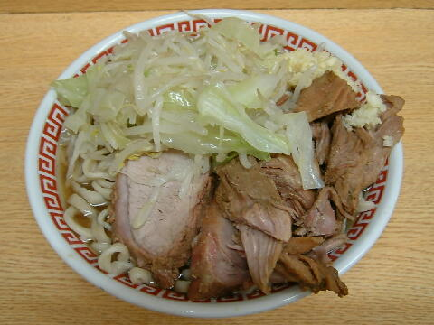
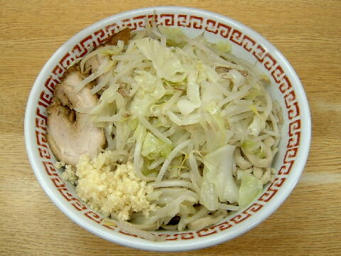
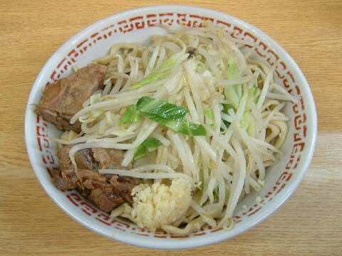
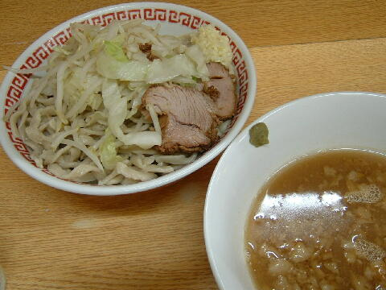

世田谷区 代田 5-29-5
月（祝日含む）
11：00〜14：00くらい 17：00〜20：00くらい
土・日・祝 11：00〜14：00くらい
割と上の通りにならない場合が多いので、ツイッターで確認して下さい。
中学生未満の方おことわり
小 750円、小豚 900円、小豚W 1050円
大盛り ＋100円（現金）
冷まし中華 ＋100円（現金）、つけ麺 ＋100円（現金）
いいたまご。 100円（現金）、かつおぶし。 50円（現金）、たまねぎ。 50円（現金）、づけにんにく。 50円（現金）
張り紙でユニークな有料トッピングがある時もある。
店員は、「私を二郎に連れてって/打首獄門同好会」のバックコーラスに参加していた店主と助手。
無。
レンゲ無。ティッシュ有。名刺無。
BGMは、Mステに出演して2014/2/7の平凡で退屈な金曜日を劇的でエポックメイキングな夜に一変させたBABYMETAL。
トッピングは、一般的二郎と同じだが、アブラは味付き。
写真の質問禁止。※自分でうまくやってください。
新代田は時々変わるので最新の情報を。
「ヘドバンVol.10」で店主が「新新代田店でお願いします。」と答えていたので、当店でも「新新代田店」と表記致します。
ラーメン二郎 環七新代田店 環七新代田店のTwitter
「ラーメン二郎 新代田」でヤフー検索
「ラーメン二郎 新代田」でヤフーリアルタイム検索
「ラーメン二郎 新代田」でグーグル検索

小豚 ニンニク
麺は、二郎標準のちじれ麺。小麦がギュッと詰まっており風味もゆたかでモチモチ。
ぶたは、でっかいウデ肉。柔らかく味付けもちょうど良く食い応え充分。
スープは、微乳化だが液体油と固形脂がたっぷりで、豚の出汁もたっぷり出た重厚でしょっぱうまなもの。
ヤサイは、モヤシ7：キャベツ3の割合。程良い茹で具合。
ニンニクは、細かく刻まれた辛さの強いもの。
新代田は安定しておらず、時々変わるので最新の情報を。

小（汁なし） ニンニク
「汁なし」は麺量確認時に「汁なし！」と伝えるとやってくれる。追加料金なし！
他店の「汁なし」と比べると、こちらは多量の背脂で食わせるタイプ。
「よく混ぜてください」とのこと。
期間限定。
新代田は安定しておらず、時々変わるので最新の情報を。

冷まし中華 ニンニク
食券を渡す時「冷ましで！」と言うとやってくれる。先に言わなきゃできません。
トッピングはラーメンと同じ。
冷水で冷やされた麺と甘酸っぱいタレをまぜて食らう。
夏季限定。
新代田は安定しておらず、時々変わるので最新の情報を。

小＋つけ麺 ニンニク
トッピングはラーメンと同じ。
つけダレの丼には、正統派のしょうゆタイプ。背脂ぷかぷか。
この日は柚子胡椒のうぐいすつけ麺であった。
麺の丼には、ご覧の具材。
Twitterで指定された日だけ。
新代田は安定しておらず、時々変わるので最新の情報を。
ＰＣ店